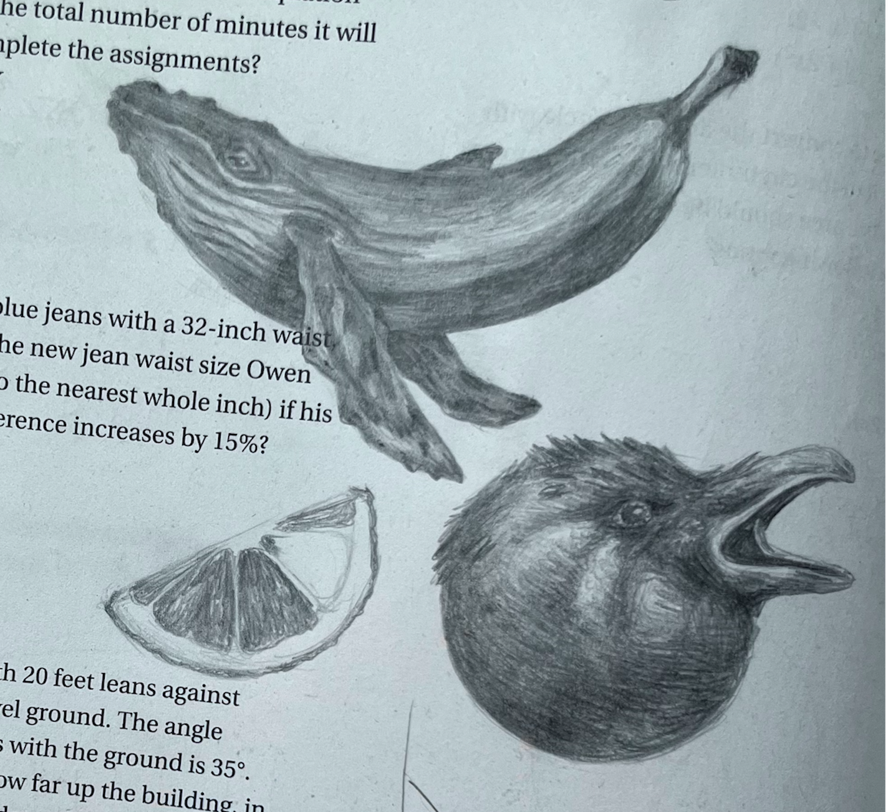
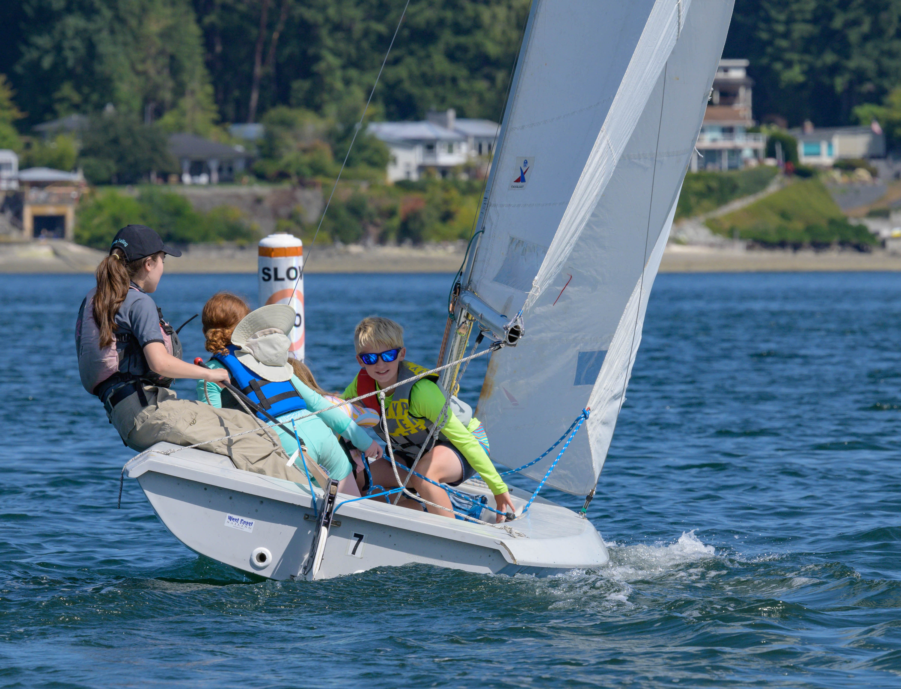

WORK
Research
UW Social Reinforcement Learning Laboratory
Advised by Prof. Natasha Jaques, I study how AI can learn from people and one another to better support teamwork, adapt in real time, and make everyday technologies safer and more human-centric.
- Co-author on an ICLR 2026 paper, in collaboration with MIT. Generative Adversarial Post-Training Mitigates Reward Hacking in Live Human-AI Music Interaction
- Helped build and test the real-time interactive system, including backend integration with the model.
- Explored broader challenges in real-time generative models, including reward hacking and diversity collapse.
Teaching
Teaching Assistant
I currently TA across multiple areas of computer science: CSE 154 (full-stack web development), CSE 412 (data visualization), and CSE 340 (interaction programming).
- Lead quiz sections of 12–30 students.
- Provide individualized support in office hours to break down technical concepts.
- Evaluate assignments and provide written feedback.
- Collaborate and coordinate between professors, TAs, and students.
Industry
Software Development Engineer Intern
MORE
I'm also an artist, musician, and sailing instructor.
Art



Music
Sailing
